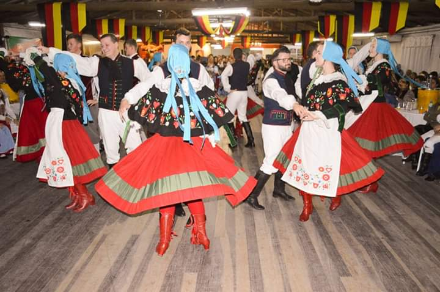

Quem sou
Me chamo Jaíne Buchweitz Jorge, tenho 24 anos, atualmente moro na cidade de São Lourenço do Sul, em julho de 2018 me formei no Instituto Federal-sul-rio-grandense IFsul (Pelotas – RS)
no Técnico em Telecomunicações e atualmente sou estudante na Universidade Federal da Fronteira Sul UFFS (Chapecó – SC)
no curso de Ciência da Computação, no primeiro semestre.

São Lourenço do Sul
São Lourenço do Sul fica localizada no Rio Grande do sul, tem uma população de mais ou menos 44 mil habitantes,
fica 164.89 km de distancia da capital Porto Alegre.
1 / 5

2 / 5

3 / 5

4 / 5

5 / 5

❮
❯
São Lourenço do Sul embora sendo bem pequena é uma cidade turistica e destino de férias de muitas pessoas do Brasil!
Sonnenschein
Na cidade tem um grupo de danças folclorica alemã chamado Sonnenschein que tem 38 anos e junto com o grupo
nasceu a festa mais popular da cidade que acontece todo ano no segundo final de semana do mês de Outubro chamada de
Sudoktoberfest.
